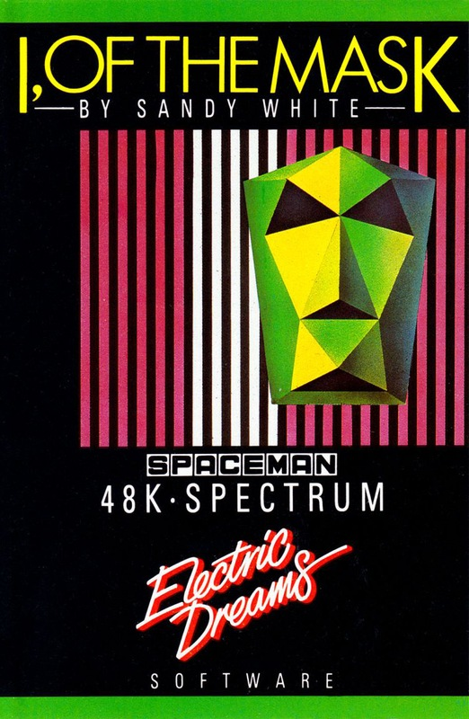
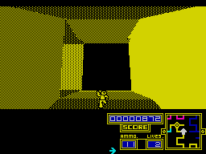
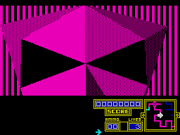

I of the Mask


{kind=link}

| Publisher: | Electric Dreams |
| Price: | £9.95 |
| Year: | 1985 |
| Source: | CRASH, Issue 23 |

Sandy White, author of 3D Ant Attack and the follow-up Zombie Zombie has now produced his third game for Rod Cousens, who is publishing it under the new Electric Dreams label.
The game revolves around the tortuous Newgama III space trials. Equipped with an A4A Pack Jet Suit, you are cast into a massive maze containing 32 universes. To escape you need to construct a robot from active robot spares lying around within the universes which may be accessed from nodes in the maze.

the maze corridor in I OF THE MASK. You’re
not far from a node, as the little map
window bottom right reveals. So far
you’ve lost a life, gained eleven shots
for your laser and haven’t got a single
bit of robot
There are enough parts within the maze to create at least one robot, but before a robot part can be added to your collection it must be deactivated. The parts also have to be located and deactivated in a specific order, starting from the feet upwards. Upon collecting the final component, the mask, the greatest award is bestowed: you become Of The Mask.
The top half of the screen is taken up with the view of the maze and includes a little effigy of your good self on the lower part. The bottom of the screen contains various status indicators and keeps track of the robot you are assembling, with parts being added as you collect them.
The corridors of the maze are displayed in one colour, each wall being shaded with a different pattern depending on the angle of the wall to your view. As you move through the maze, the perspective changes, together with the shading. When you turn a corner, instead of just flipping ninety degrees into the next corridor, the corner and walls move around smoothly.
The maze is split into different sections or zones, each having a colour allocated to it. In the corridors the colour of the walls matches the colour of the zone you’re in, and flashing areas shown on the map also have flashing walls when you move through them. On the bottom right hand comer of the screen is a small window showing your position upon the overall map, with your direction and position marked by a small arrow. As you move about the arrow stays central and the window scrolls over the larger maze map. Pausing the game is quite helpful, since the full map of the maze is displayed.
Along the various corridors are handily positioned node points: these are gateways to the robot parts and other sections of maze. Upon entering a node section the view flips to three giant crystals which rotate about the screen and you are given ammunition for your laser — the number of shots you have remaining is shown on a little counter in the status area.

succeed in assembling a robot in I, OF
THE MASK
When you fire on a crystal, it beams you to another place. The top crystal transports you to a different node with a different set of three crystals, while the bottom right crystal takes you to a section of the maze. (These crystal gates are shown on the main map of the maze by flashing areas). The bottom left crystal will transport your man into the parts store in the universe behind the three crystals.
Once in a universe you are twisted and rotated around the robot part it contains and must blast it three times in the time you are allowed. Do this, and the component is deactivated. Bonus power is awarded whenever you deactivate a part, but the component is not added to your robot unless it is the next part in the sequence.
Throughout the game a digital power counter decrements — if you don’t visit a node, enter a universe and deactivate a robot part before your energy runs out, it’s time to start another game. You start with three lives, however, and if energy’s getting desperately low you can enter a universe, deactivate a part and gain the bonus energy. If the part is not in the correct sequence, then you keep the energy but lose a life.
CRITICISM
‘This highly original program got many a gasp when it was loaded up in the office. If you merely look at the graphics objectively they’re not that hot, but once you get into playing the game it’s possible to get totally lost within the illusion. I of the Mask is technically very cunning, and there’s a fair bit of strategy to back it all up in the gameplay. There’s quite a challenge in assembling a robot. Deactivating the activated robot components was probably the strongest section. A major portion of the game depends on mapping out the vast maze area — not really my scene, though I can see the appeal for other users.’
‘The game employs some of the most remarkable graphics I’ve come across on a Spectrum. Some of the perspective shots are brilliant. Sandy White’s obviously learned a lot since 3D Ant Attack. The game contains far more than meets the eye and in fact at first, I wasn’t aware that half of the game actually existed! The extremely vague instructions didn’t help — giving no clues about how to use lives for instance — which was quite annoying. As it turns out, I of the Mask is a deceptively subtle game. It’s an attractive game too, and will doubtlessly appeal to many. Evidently, Sandy White is far ahead of his time.’
‘About two years ago Sandy White released a game called 3D Ant Attack which, at the time, was very impressive. His latest game continues the 3D theme but his techniques have advanced a bit from 1983. I of the Mask is graphically superb and a delight to watch. Essentially I of the Mask is a maze/strategy game with a few differences. While being very playable I suspect that once I completed it I wouldn’t go back to it again. With that said, it’s not going to be a game that can be finished quickly. I of the Mask represents a step forward in 3D graphics. Overall, it is a very impressive game and if you like maze games, there’s no excuse for not buying it.’
COMMENTS
| Control keys: | 0 to fire, H to pause and view the main map, direction keys according to joystick option selected |
| Joystick: | Kempston, Interface 2, Protek/Cursor |
| Keyboard play: | Unusual arrangement (see above), very responsive |
| Use of colour: | Monochromatic, avoiding attribute problems |
| Graphics: | Sandy White ... excellent |
| Sound: | Adequate, but not outstanding |
| Skill levels: | One |
| Screens: | Corridors linking 32 universes |
| General rating: | Technically excellent, backed with a fair bit of strategic gameplay |
| Use of computer: | 91% |
| Graphics: | 96% |
| Playability: | 92% |
| Getting started: | 89% |
| Addictive qualities: | 88% |
| Value for money: | 87% |
| Overall: | 92% |